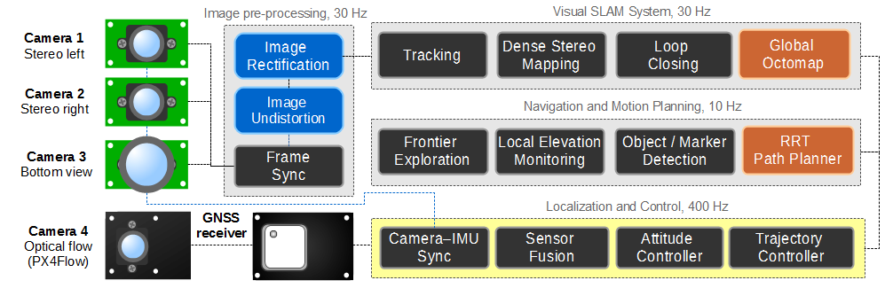
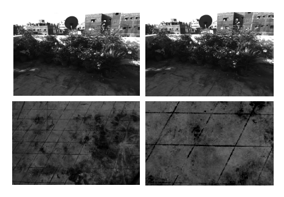
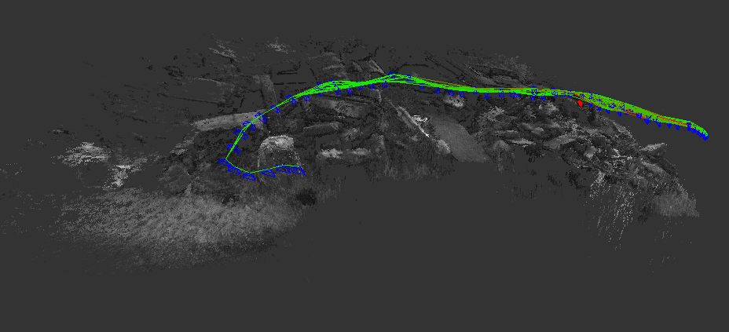

Technical
All of the Artemis MAVs follow the same basic, distributed system architecture. There is a high-level onboard computer, and a low-level embedded flight controller, typically a PX4 autopilot board, or similar derivative. The middleware of choice on the high-level companion computer is ROS (Robot Operating System) and the PX4 Middleware on the deeply embedded controller.
Hardware
Computing
We have tested several onboard
computing solutions, with varying levels of compute capability.
Vision
Flight
Control
Software
State Estimation
Visual Navigation
Mapping
Terrain Analysis
Obstacle Avoidance
Trajectory Control